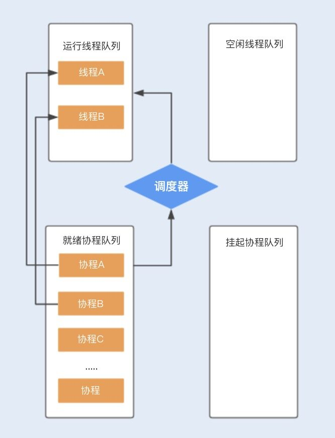
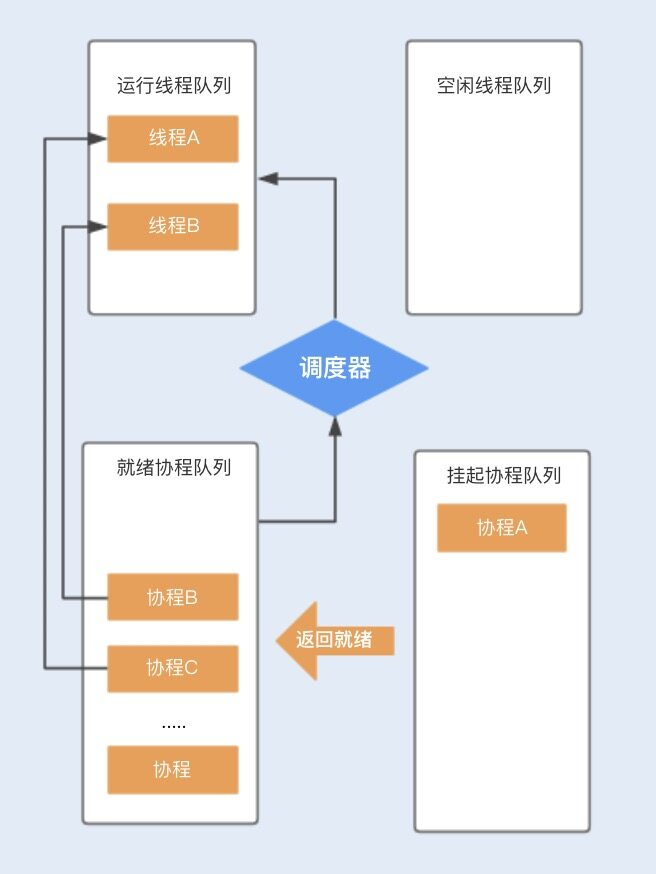
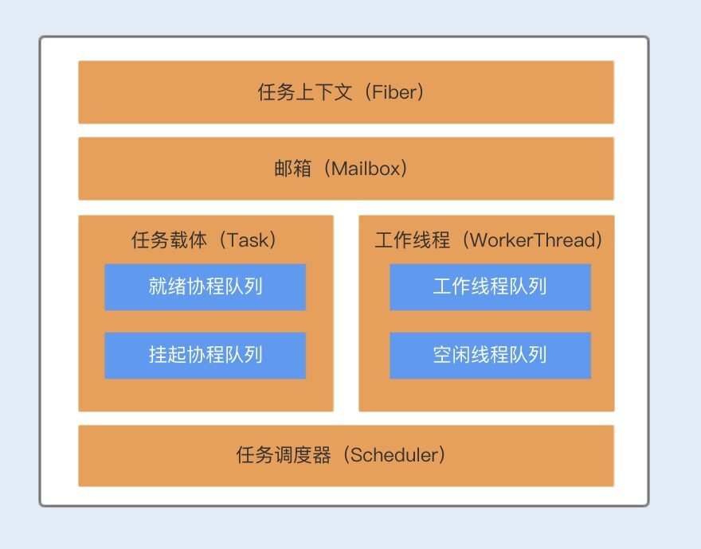

- 00 开篇词你为什么需要学习并发编程？.md
- 01 如何制定性能调优标准？.md
- 02 如何制定性能调优策略？.md
- 03 字符串性能优化不容小觑，百M内存轻松存储几十G数据.md
- 04 慎重使用正则表达式.md
- 05 ArrayList还是LinkedList？使用不当性能差千倍.md
- 06 Stream如何提高遍历集合效率？.md
- 07 深入浅出HashMap的设计与优化.md
- 08 网络通信优化之IO模型：如何解决高并发下IO瓶颈？.md
- 09 网络通信优化之序列化：避免使用Java序列化.md
- 10 网络通信优化之通信协议：如何优化RPC网络通信？.md
- 11 答疑课堂：深入了解NIO的优化实现原理.md
- 12 多线程之锁优化（上）：深入了解Synchronized同步锁的优化方法.md
- 13 多线程之锁优化（中）：深入了解Lock同步锁的优化方法.md
- 14 多线程之锁优化（下）：使用乐观锁优化并行操作.md
- 15 多线程调优（上）：哪些操作导致了上下文切换？.md
- 16 多线程调优（下）：如何优化多线程上下文切换？.md
- 17 并发容器的使用：识别不同场景下最优容器.md
- 18 如何设置线程池大小？.md
- 19 如何用协程来优化多线程业务？.md
- 20 磨刀不误砍柴工：欲知JVM调优先了解JVM内存模型.md
- 21 深入JVM即时编译器JIT，优化Java编译.md
- 22 如何优化垃圾回收机制？.md
- 23 如何优化JVM内存分配？.md
- 24 内存持续上升，我该如何排查问题？.md
- 25 答疑课堂：模块四热点问题解答.md
- 26 单例模式：如何创建单一对象优化系统性能？.md
- 27 原型模式与享元模式：提升系统性能的利器.md
- 28 如何使用设计模式优化并发编程？.md
- 29 生产者消费者模式：电商库存设计优化.md
- 30 装饰器模式：如何优化电商系统中复杂的商品价格策略？.md
- 31 答疑课堂：模块五思考题集锦.md
- 32 MySQL调优之SQL语句：如何写出高性能SQL语句？.md
- 33 MySQL调优之事务：高并发场景下的数据库事务调优.md
- 34 MySQL调优之索引：索引的失效与优化.md
- 35 记一次线上SQL死锁事故：如何避免死锁？.md
- 36 什么时候需要分表分库？.md
- 37 电商系统表设计优化案例分析.md
- 38 数据库参数设置优化，失之毫厘差之千里.md
- 39 答疑课堂：MySQL中InnoDB的知识点串讲.md
- 41 如何设计更优的分布式锁？.md
- 42 电商系统的分布式事务调优.md
- 43 如何使用缓存优化系统性能？.md
- 44 记一次双十一抢购性能瓶颈调优.md
- 加餐 什么是数据的强、弱一致性？.md
- 加餐 推荐几款常用的性能测试工具.md
- 答疑课堂：模块三热点问题解答.md
- 结束语 栉风沐雨，砥砺前行！.md
19 如何用协程来优化多线程业务？
你好，我是刘超。
近一两年，国内很多互联网公司开始使用或转型 Go 语言，其中一个很重要的原因就是 Go 语言优越的性能表现，而这个优势与 Go 实现的轻量级线程 Goroutines（协程 Coroutine）不无关系。那么 Go 协程的实现与 Java 线程的实现有什么区别呢？
线程实现模型
了解协程和线程的区别之前，我们不妨先来了解下底层实现线程几种方式，为后面的学习打个基础。
实现线程主要有三种方式：轻量级进程和内核线程一对一相互映射实现的 1:1 线程模型、用户线程和内核线程实现的 N:1 线程模型以及用户线程和轻量级进程混合实现的 N:M 线程模型。
1:1 线程模型
以上我提到的内核线程（Kernel-Level Thread, KLT）是由操作系统内核支持的线程，内核通过调度器对线程进行调度，并负责完成线程的切换。
我们知道在 Linux 操作系统编程中，往往都是通过 fork() 函数创建一个子进程来代表一个内核中的线程。一个进程调用 fork() 函数后，系统会先给新的进程分配资源，例如，存储数据和代码的空间。然后把原来进程的所有值都复制到新的进程中，只有少数值与原来进程的值（比如 PID）不同，这相当于复制了一个主进程。
采用 fork() 创建子进程的方式来实现并行运行，会产生大量冗余数据，即占用大量内存空间，又消耗大量 CPU 时间用来初始化内存空间以及复制数据。
如果是一份一样的数据，为什么不共享主进程的这一份数据呢？这时候轻量级进程（Light Weight Process，即 LWP）出现了。
相对于 fork() 系统调用创建的线程来说，LWP 使用 clone() 系统调用创建线程，该函数是将部分父进程的资源的数据结构进行复制，复制内容可选，且没有被复制的资源可以通过指针共享给子进程。因此，轻量级进程的运行单元更小，运行速度更快。LWP 是跟内核线程一对一映射的，每个 LWP 都是由一个内核线程支持。
N:1 线程模型
1:1 线程模型由于跟内核是一对一映射，所以在线程创建、切换上都存在用户态和内核态的切换，性能开销比较大。除此之外，它还存在局限性，主要就是指系统的资源有限，不能支持创建大量的 LWP。
N:1 线程模型就可以很好地解决 1:1 线程模型的这两个问题。
该线程模型是在用户空间完成了线程的创建、同步、销毁和调度，已经不需要内核的帮助了，也就是说在线程创建、同步、销毁的过程中不会产生用户态和内核态的空间切换，因此线程的操作非常快速且低消耗。
N:M 线程模型
N:1 线程模型的缺点在于操作系统不能感知用户态的线程，因此容易造成某一个线程进行系统调用内核线程时被阻塞，从而导致整个进程被阻塞。
N:M 线程模型是基于上述两种线程模型实现的一种混合线程管理模型，即支持用户态线程通过 LWP 与内核线程连接，用户态的线程数量和内核态的 LWP 数量是 N:M 的映射关系。
了解完这三个线程模型，你就可以清楚地了解到 Go 协程的实现与 Java 线程的实现有什么区别了。
JDK 1.8 Thread.java 中 Thread#start 方法的实现，实际上是通过 Native 调用 start0 方法实现的；在 Linux 下， JVM Thread 的实现是基于 pthread_create 实现的，而 pthread_create 实际上是调用了 clone() 完成系统调用创建线程的。
所以，目前 Java 在 Linux 操作系统下采用的是用户线程加轻量级线程，一个用户线程映射到一个内核线程，即 1:1 线程模型。由于线程是通过内核调度，从一个线程切换到另一个线程就涉及到了上下文切换。
而 Go 语言是使用了 N:M 线程模型实现了自己的调度器，它在 N 个内核线程上多路复用（或调度）M 个协程，协程的上下文切换是在用户态由协程调度器完成的，因此不需要陷入内核，相比之下，这个代价就很小了。
协程的实现原理
协程不只在 Go 语言中实现了，其实目前大部分语言都实现了自己的一套协程，包括 C#、erlang、python、lua、javascript、ruby 等。
相对于协程，你可能对进程和线程更为熟悉。进程一般代表一个应用服务，在一个应用服务中可以创建多个线程，而协程与进程、线程的概念不一样，我们可以将协程看作是一个类函数或者一块函数中的代码，我们可以在一个主线程里面轻松创建多个协程。
程序调用协程与调用函数不一样的是，协程可以通过暂停或者阻塞的方式将协程的执行挂起，而其它协程可以继续执行。这里的挂起只是在程序中（用户态）的挂起，同时将代码执行权转让给其它协程使用，待获取执行权的协程执行完成之后，将从挂起点唤醒挂起的协程。 协程的挂起和唤醒是通过一个调度器来完成的。
结合下图，你可以更清楚地了解到基于 N:M 线程模型实现的协程是如何工作的。
假设程序中默认创建两个线程为协程使用，在主线程中创建协程 ABCD…，分别存储在就绪队列中，调度器首先会分配一个工作线程 A 执行协程 A，另外一个工作线程 B 执行协程 B，其它创建的协程将会放在队列中进行排队等待。

当协程 A 调用暂停方法或被阻塞时，协程 A 会进入到挂起队列，调度器会调用等待队列中的其它协程抢占线程 A 执行。当协程 A 被唤醒时，它需要重新进入到就绪队列中，通过调度器抢占线程，如果抢占成功，就继续执行协程 A，失败则继续等待抢占线程。

相比线程，协程少了由于同步资源竞争带来的 CPU 上下文切换，I/O 密集型的应用比较适合使用，特别是在网络请求中，有较多的时间在等待后端响应，协程可以保证线程不会阻塞在等待网络响应中，充分利用了多核多线程的能力。而对于 CPU 密集型的应用，由于在多数情况下 CPU 都比较繁忙，协程的优势就不是特别明显了。
Kilim 协程框架
虽然这么多的语言都实现了协程，但目前 Java 原生语言暂时还不支持协程。不过你也不用泄气，我们可以通过协程框架在 Java 中使用协程。
目前 Kilim 协程框架在 Java 中应用得比较多，通过这个框架，开发人员就可以低成本地在 Java 中使用协程了。
在 Java 中引入 Kilim ，和我们平时引入第三方组件不太一样，除了引入 jar 包之外，还需要通过 Kilim 提供的织入（Weaver）工具对 Java 代码编译生成的字节码进行增强处理，比如，识别哪些方式是可暂停的，对相关的方法添加上下文处理。通常有以下四种方式可以实现这种织入操作：
- 在编译时使用 maven 插件；
- 在运行时调用 kilim.tools.Weaver 工具；
- 在运行时使用 kilim.tools.Kilim invoking 调用 Kilim 的类文件；
- 在 main 函数添加 if (kilim.tools.Kilim.trampoline(false,args)) return。
Kilim 框架包含了四个核心组件，分别为：任务载体（Task）、任务上下文（Fiber）、任务调度器（Scheduler）以及通信载体（Mailbox）。

Task 对象主要用来执行业务逻辑，我们可以把这个比作多线程的 Thread，与 Thread 类似，Task 中也有一个 run 方法，不过在 Task 中方法名为 execute，我们可以将协程里面要做的业务逻辑操作写在 execute 方法中。
与 Thread 实现的线程一样，Task 实现的协程也有状态，包括：Ready、Running、Pausing、Paused 以及 Done 总共五种。Task 对象被创建后，处于 Ready 状态，在调用 execute() 方法后，协程处于 Running 状态，在运行期间，协程可以被暂停，暂停中的状态为 Pausing，暂停后的状态为 Paused，暂停后的协程可以被再次唤醒。协程正常结束后的状态为 Done。
Fiber 对象与 Java 的线程栈类似，主要用来维护 Task 的执行堆栈，Fiber 是实现 N:M 线程映射的关键。
Scheduler 是 Kilim 实现协程的核心调度器，Scheduler 负责分派 Task 给指定的工作者线程 WorkerThread 执行，工作者线程 WorkerThread 默认初始化个数为机器的 CPU 个数。
Mailbox 对象类似一个邮箱，协程之间可以依靠邮箱来进行通信和数据共享。协程与线程最大的不同就是，线程是通过共享内存来实现数据共享，而协程是使用了通信的方式来实现了数据共享，主要就是为了避免内存共享数据而带来的线程安全问题。
协程与线程的性能比较
接下来，我们通过一个简单的生产者和消费者的案例，来对比下协程和线程的性能。可通过 Github 下载本地运行代码。
Java 多线程实现源码：
public class MyThread {
private static Integer count = 0;//
private static final Integer FULL = 10; // 最大生产数量
private static String LOCK = "lock"; // 资源锁
public static void main(String[] args) {
MyThread test1 = new MyThread();
long start = System.currentTimeMillis();
List<Thread> list = new ArrayList<Thread>();
for (int i = 0; i < 1000; i++) {// 创建五个生产者线程
Thread thread = new Thread(test1.new Producer());
thread.start();
list.add(thread);
}
for (int i = 0; i < 1000; i++) {// 创建五个消费者线程
Thread thread = new Thread(test1.new Consumer());
thread.start();
list.add(thread);
}
try {
for (Thread thread : list) {
thread.join();// 等待所有线程执行完
}
} catch (InterruptedException e) {
e.printStackTrace();
}
long end = System.currentTimeMillis();
System.out.println(" 子线程执行时长：" + (end - start));
}
// 生产者
class Producer implements Runnable {
public void run() {
for (int i = 0; i < 10; i++) {
synchronized (LOCK) {
while (count == FULL) {// 当数量满了时
try {
LOCK.wait();
} catch (Exception e) {
e.printStackTrace();
}
}
count++;
System.out.println(Thread.currentThread().getName() + " 生产者生产，目前总共有 " + count);
LOCK.notifyAll();
}
}
}
}
// 消费者
class Consumer implements Runnable {
public void run() {
for (int i = 0; i < 10; i++) {
synchronized (LOCK) {
while (count == 0) {// 当数量为零时
try {
LOCK.wait();
} catch (Exception e) {
}
}
count--;
System.out.println(Thread.currentThread().getName() + " 消费者消费，目前总共有 " + count);
LOCK.notifyAll();
}
}
}
}
}
Kilim 协程框架实现源码：
public class Coroutine {
static Map<Integer, Mailbox<Integer>> mailMap = new HashMap<Integer, Mailbox<Integer>>();// 为每个协程创建一个信箱，由于协程中不能多个消费者共用一个信箱，需要为每个消费者提供一个信箱，这也是协程通过通信来保证共享变量的线程安全的一种方式
public static void main(String[] args) {
if (kilim.tools.Kilim.trampoline(false,args)) return;
Properties propes = new Properties();
propes.setProperty("kilim.Scheduler.numThreads", "1");// 设置一个线程
System.setProperties(propes);
long startTime = System.currentTimeMillis();
for (int i = 0; i < 1000; i++) {// 创建一千生产者
Mailbox<Integer> mb = new Mailbox<Integer>(1, 10);
new Producer(i, mb).start();
mailMap.put(i, mb);
}
for (int i = 0; i < 1000; i++) {// 创建一千个消费者
new Consumer(mailMap.get(i)).start();
}
Task.idledown();// 开始运行
long endTime = System.currentTimeMillis();
System.out.println( Thread.currentThread().getName() + " 总计花费时长：" + (endTime- startTime));
}
}
// 生产者
public class Producer extends Task<Object> {
Integer count = null;
Mailbox<Integer> mb = null;
public Producer(Integer count, Mailbox<Integer> mb) {
this.count = count;
this.mb = mb;
}
public void execute() throws Pausable {
count = count*10;
for (int i = 0; i < 10; i++) {
mb.put(count);// 当空间不足时，阻塞协程线程
System.out.println(Thread.currentThread().getName() + " 生产者生产，目前总共有 " + mb.size() + " 生产了：" + count);
count++;
}
}
}
// 消费者
public class Consumer extends Task<Object> {
Mailbox<Integer> mb = null;
public Consumer(Mailbox<Integer> mb) {
this.mb = mb;
}
/**
* 执行
*/
public void execute() throws Pausable {
Integer c = null;
for (int i = 0; i < 10000; i++) {
c = mb.get();// 获取消息，阻塞协程线程
if (c == null) {
System.out.println(" 计数 ");
}else {
System.out.println(Thread.currentThread().getName() + " 消费者消费，目前总共有 " + mb.size() + " 消费了：" + c);
c = null;
}
}
}
}
在这个案例中，我创建了 1000 个生产者和 1000 个消费者，每个生产者生产 10 个产品，1000 个消费者同时消费产品。我们可以看到两个例子运行的结果如下：
多线程执行时长：2761
协程执行时长：1050
通过上述性能对比，我们可以发现：在有严重阻塞的场景下，协程的性能更胜一筹。其实，I/O 阻塞型场景也就是协程在 Java 中的主要应用。
总结
协程和线程密切相关，协程可以认为是运行在线程上的代码块，协程提供的挂起操作会使协程暂停执行，而不会导致线程阻塞。
协程又是一种轻量级资源，即使创建了上千个协程，对于系统来说也不是很大的负担，但如果在程序中创建上千个线程，那系统可真就压力山大了。可以说，协程的设计方式极大地提高了线程的使用率。
通过今天的学习，当其他人侃侃而谈 Go 语言在网络编程中的优势时，相信你不会一头雾水。学习 Java 的我们也不要觉得，协程离我们很遥远了。协程是一种设计思想，不仅仅局限于某一门语言，况且 Java 已经可以借助协程框架实现协程了。
但话说回来，协程还是在 Go 语言中的应用较为成熟，在 Java 中的协程目前还不是很稳定，重点是缺乏大型项目的验证，可以说 Java 的协程设计还有很长的路要走。
思考题
在 Java 中，除了 Kilim 框架，你知道还有其它协程框架也可以帮助 Java 实现协程吗？你使用过吗？